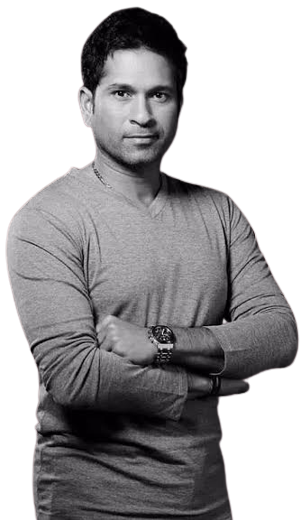

The Master Blaster
A cricket genius who went on to become the sport’s greatest icon

Sachin Tendulkar:
Born on April 24, 1973, Sachin Ramesh Tendulkar came from a middle-class Maharashtrian
family in Mumbai,
Coached
by Ramakant Achrekar, Sachin first made his mark in school cricket. He made his first class cricket debut at
the
age of 15, and the test cricket debut at 16. Making and breaking innumerable records, and taking over the
titles- Little Master and Master Blaster from his idols Sunil Gavaskar and Vivian Richards, Tendulkar played
international cricket for 24 years and left a dazzling cricketing legacy that is second to none!
Here's a brief about Sachin's life:
- 1973- Born April 24, Mumbai.
- 1988- Scores 100 not out in his first first-class match for Bombay against Gujarat
in the Ranji Trophy becoming the youngest cricketer to score a century on his first-class debut,
aged 15 years and 232 days.
- 1989- Makes Test debut for India against Pakistan in Karachi at the age of 16.
- December,1989- Makes ODI debut against Pakistan but is dismissed by Waqar Younis
without scoring a run.
- 1990- Scores maiden Test century against England at Old Trafford.
- 1994 September 9- Claims his first ODI century against Sri Lanka in Colombo after
79 one-day matches.
- 1996- Leading run scorer at World Cup played in India, Pakistan and Sri Lanka with
a total of 523 runs.
- 1998- Scores his first double century for Mumbai against Australia in the Brabourne
Stadium.
- 2001- Given a suspended ban of one game in light of alleged ball tampering during a
match against South Africa at St George’s Park, Port Elizabeth. The ban is later lifted by the
International Cricket Council after an investigation.
- 2003- Named the Player of the Tournament at the 2003 Cricket World Cup and scores
673 runs, the highest by any player in the tournament.
- 2005- Overtakes Sunil Gavaskar’s record of the highest number of Test centuries by
claiming his 35th against Sri Lanka in Delhi.
- 2006- Overtakes Kapil Dev claiming the record for the highest amount of Test
appearances for India with 135.
- January 3,2007- Edges past Brian Lara’s world record of runs scored in Tests away
from home with 5,751 runs.
- June,2007- Becomes the first player to score over 15,000 ODI runs during a match
against South Africa in Belfast.
- October 17,2008- Becomes the highest run scorer in Test cricket, passing Lara’s
previous mark of 11,953, when he reaches 16 in the first innings of the second Test against
Australia.
- February 24,2010- Scores the first double century in one-day international history,
hitting an unbeaten 200 against South Africa.
- April,2010- Named player of IPL3 after finishing as the tournament’s top
run-scorer.
- August 3,2010- Becomes most capped player in Test history, making his 169th Test
appearance in the third Test against Sri Lanka in Colombo to overtake former Australia captain Steve
Waugh.
- December 19,2010- Becomes first batsman to hit 50 Test centuries, achieving the
feat against South Africa in Centurion.
- March,2011- Hits two tournament centuries as co-hosts India win the World Cup.
- November,2011- Becomes the first man to score 15,000 Test runs during Test series
against West Indies.
- March,2012- Scores his 100th international century in an Asia Cup match against
Bangladesh, the first player ever to do so.
- December 23,2012- Announces retirement from one-day international cricket.
- October 10,2013- Announces he will retire from Test cricket after playing in his
200th Test against the West Indies in November.
See more
"Commit all your crimes when Sachin is batting. They will go unnoticed, even the Lord is busy
watching
him."

Sachin Tendulkar with everything he ever played for, the world cup.